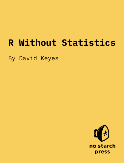

About the Book
This is the in-progress version of R Without Statistics, a forthcoming book from No Starch Press.
Since R was invented in 1993, it has become a widely used programming language for statistical analysis. From academia to the tech world and beyond, R is used for a wide range of statistical analysis.
R’s ubiquity in the world of statistics leads many to assume that it is only useful to those who do complex statistical work. But as R has grown in popularity, the number of ways it can be used has grown as well. Today, R is used for:
Data visualization
Map making
Sharing results through reports, slides, and websites
Automating processes
And much more!
The idea that R is only for statistical analysis is outdated and inaccurate. But, without a single book that demonstrates the power of R for non-statistical purposes, this perception persists.
Enter R Without Statistics.
R Without Statistics will show ways that R can be used beyond complex statistical analysis. Readers will learn about a range of uses for R, many of which they have likely never even considered.
Each chapter will, using a consistent format, cover one novel way of using R.
Readers will first be introduced to an R user who has done something novel and learn how using R in this way transformed their work.
Following this, there will be code samples that demonstrate exactly how the R user did the thing they are being profiled for.
Finally, there will be a summary, with lessons learned from this novel way of using R.
Written by David Keyes, Founder and CEO of R for the Rest of Us, R Without Statistics will be published by No Starch Press.